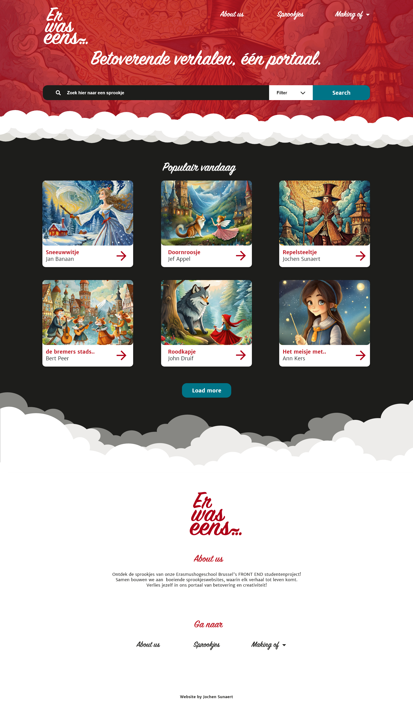
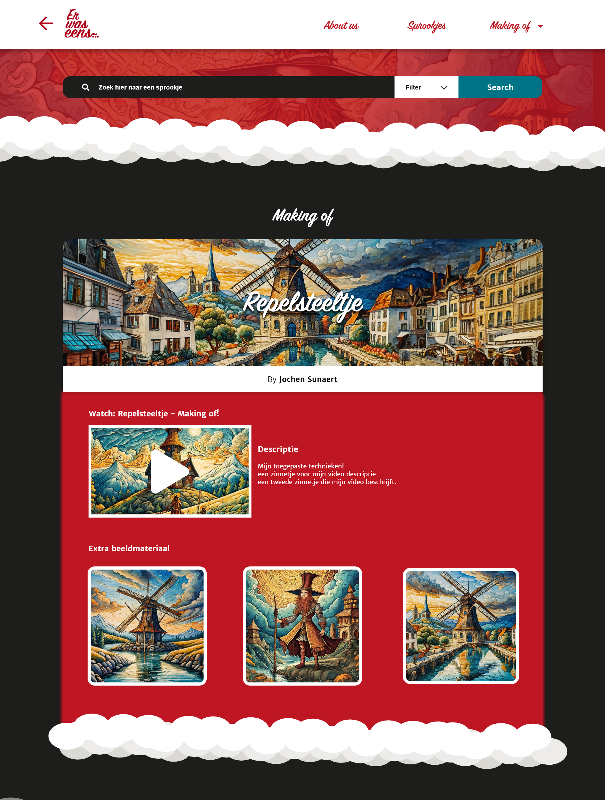

- Portaal -
mijn contributie:
- DESIGN - FRONTEND - ANIMATIONS -
Over
Het project
Voor dit schoolproject was de opdracht om drie verschillende designs te maken voor een portaalpagina van de klas. Mijn ontwerp werd geselecteerd als één van de drie en Moest vervolgens omgezet worden naar werkende code. De portaalpagina moest gebruiksvriendelijk en visueel aantrekkelijk zijn.
Als extra toevoeging implementeerde ik een parallax-effect met wolken, gemaakt in React, om de pagina een dynamischere uitstraling te geven. Dit effect maakte de pagina visueel opvallender. Het project gaf me de kans om zowel mijn ontwerp- als technische vaardigheden te ontwikkelen.
Gebruikte technologiën
HTML - CSS - REACT - FRONTEND
Media

Homepage portaalpagina over sprookjes

Making of: pagina design
Meer
Mijn aanpak
Voor dit project begon ik met het ontwerpen van een portaalpagina in adobe XD, die gekozen werd voor verder uit te werken. Na het ontwerp zette ik de pagina om in code met HTML, CSS en JavaScript. Als extra voegde ik een parallax-effect toe met wolken in React om de pagina visueel interessanter te maken. Gedurende het proces testte en optimaliseerde ik de gebruikerservaring, zodat de pagina zowel mooi als gebruiksvriendelijk was.